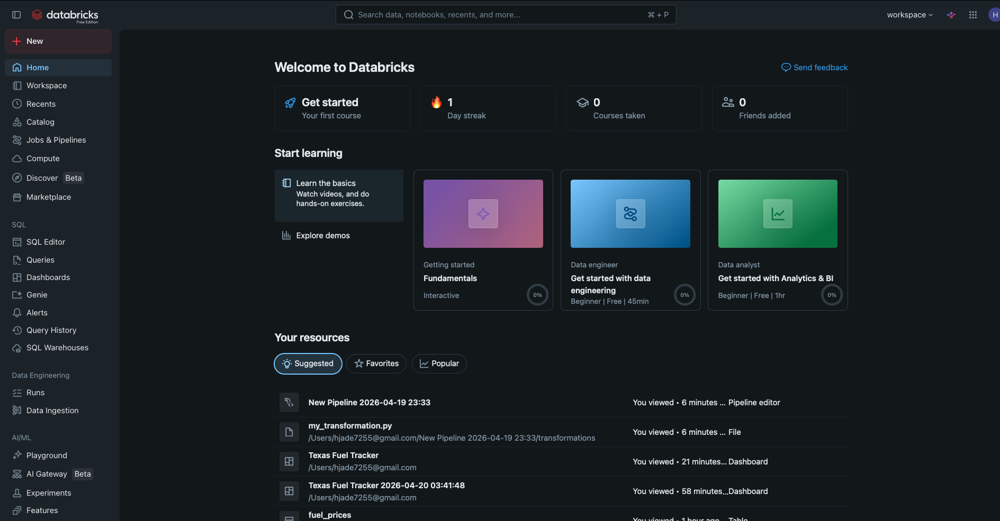

Why Databricks Is Becoming a Must-Know Tool
Over the past several years, Databricks has moved from a niche platform used mostly by data scientists to a tool that companies across finance, retail, healthcare, and technology are now adopting at scale. Built on top of Apache Spark and designed to run on cloud providers like AWS, Azure, and Google Cloud, Databricks removes the burden of managing servers and scaling infrastructure manually. What has made it especially valuable is that it brings together data storage, transformation, SQL querying, and dashboard creation all within a single environment. Rather than switching between five different tools to complete one workflow, teams can work from raw data all the way to a finished, shareable report without leaving the platform. The result is a faster, more consistent experience for both the people building data pipelines and the analysts consuming the output.

Image source: personal Databricks screenshot by site author.
For data analysts, one of the most practical things about Databricks is how naturally it supports SQL. Writing queries against large tables, saving reusable SQL datasets, and connecting those datasets directly to interactive dashboards are all built-in features of the platform. Data engineers benefit even more, because Databricks makes it straightforward to set up automated pipelines that move, clean, and organize data on a defined schedule. Whether the task is ingesting data from an external system, joining tables from multiple sources, or running a nightly aggregation before business hours, the platform handles that kind of work reliably and at scale. The combination of notebooks, SQL, jobs, and dashboards in a single workspace means teams spend less time switching between applications and more time focused on the actual problems the data is meant to answer.
From a career standpoint, Databricks is becoming increasingly common in job listings for data engineers, analytics engineers, and senior data analysts. As more organizations migrate their data infrastructure to the cloud, working in a modern lakehouse environment is a practical and marketable skill. Databricks certifications are recognized across the industry, and many companies now list platform experience alongside SQL and Python when describing what they are looking for in a hire. Getting started does not require deep programming knowledge. Learning the basics, such as uploading a dataset, running SQL queries against it, building a simple dashboard, and understanding how jobs connect different parts of a pipeline, is enough to develop a real feel for how the platform works. This site is meant to show those basics using a simple, concrete example that anyone can follow.
About This Site
This site includes two additional pages. The Demo Walkthrough page provides a step-by-step example built around a real CSV file containing monthly fuel price data for Houston, Texas. That walkthrough covers the full process of uploading the file in Databricks, creating a table named fuel_prices, writing SQL for thirteen separate datasets, and building a finished dashboard called the Texas Fuel Tracker. Each step includes a screenshot taken directly from a working Databricks session, so the walkthrough reflects what the platform actually looks like in use.
The How It Works page explains the core concepts behind Databricks in plain language, covering tables, schemas, SQL datasets, dashboards, jobs, and pipelines and how they all connect. If you are new to Databricks and want to understand the bigger picture before diving into the demo, that page is a good place to start. Together, the two pages give a practical sense of what working in Databricks actually looks like at a basic level, without requiring any prior experience with the platform.